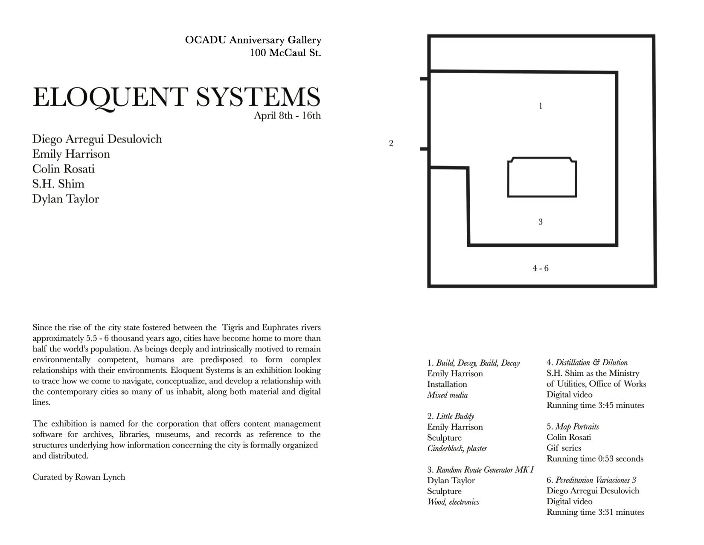
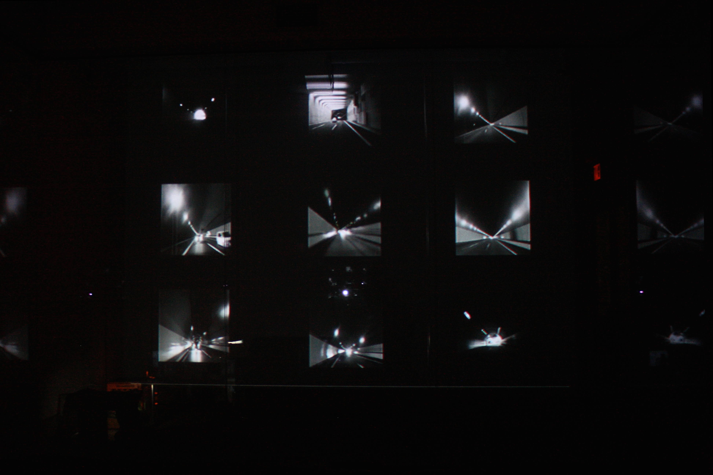
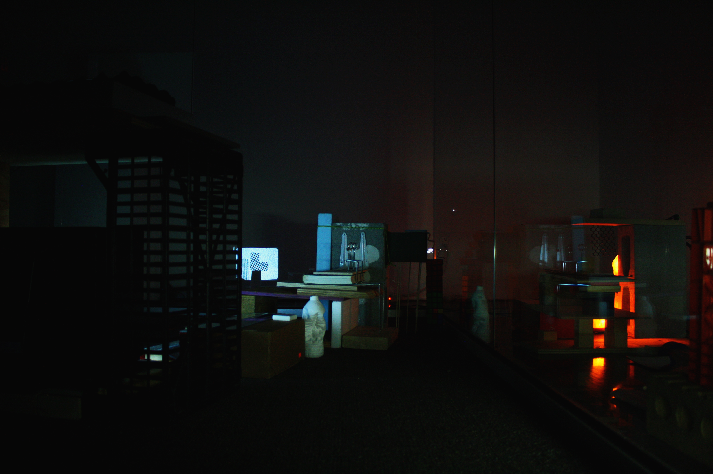

back
Eloquent Systems
OCADU Anniversary Gallery, April 8th - 16th, 2017
Curated by Rowan Lynch
Featuring work by Diego Arregui Desulovich, Emily Harrison, Colin Rosati, Simon Shim & Dylan Taylor
Eloquent Systems is an exhibition highlighting video and object based work focused on the idea of the city, as inspired by research into the Situationists International and contemporary urban life. It was on view from April 8 - 16th, 2017 in the Anniversary Gallery at OCADU. The exhibition is named for the corporation that offers content management software for archives, libraries, museums, and records as a reference to the structures that underlie how information formally concerning the city is organized and distributed.
Exhibition pamphlet can be seen here.

S.H Shim as the Ministry of Utilities, Office of Works, Distillation & Dillution, digital video, 2017.
S.H Shim as the Ministry of Utilities, Office of Works, Distillation & Dillution, digital video, 2017.
Emily Harrison, Build, Decay, Build, Decay, mixed media installation, 2017.

Emily Harrison, Buddy, found concrete and plaster cast; Build, Decay, Build, Decay, mixed media installation, 2017.